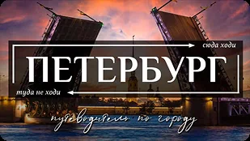
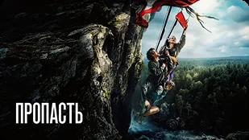
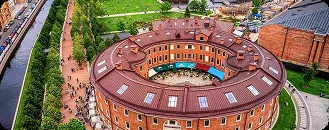
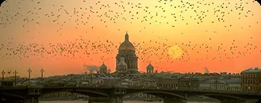

Санкт-Петербург
4–6 июля · 2 человека
14–17 августа · 2 гостя

Сейчас
Регистрация до 17:30
S7-5014
18:10
Екатеринбург
SVX
20:10
Москва
VKO
ТерминалD
Регистрация8-9 стойки
26
Заезд
Пятница, 14 авг · 12:00

Ваш номер
Бунгало с террасой
Что взять с собой в дорогу
Что посмотреть в дороге

САНКТ-ПЕТЕРБУРГ, РОССИЯ | 39 лучших достопримечательностей Петербурга 7.2
7.2
6.47.9
Регистрация до 20:55
S7-5015
21:40
Москва
VKO
02:20
Екатеринбург
SVX
ТерминалB
Регистрация12-14 стойки
14
23°
Утро
Prosa Breakfast Bar
Завтрак в тихой кофейне во дворе с авторской выпечкой

Забронировать стол
Новая Голландия
Атмосферное место для шоппинга и прогулок с детьми

на территории отеляДень
Тропа к роднику
Ровная тропа через кедровник к холодному роднику

Новая Голландия
Атмосферное место для шоппинга и прогулок с детьми
на территории отеля
Вечер
Как насчет роллов вечером?

Subzero
Стильный минималистичный ресторан на улице Рубинштейна
 на территории отеля
на территории отеляВажная Рыба
Популярная доставка и суши-бары с большим выбором блюд ресторанного уровня
 доставка
доставкаGills
Уютное японское кафе на Казанской улице
Birch
Авторская русская кухня, переосмысленная через локальные продукты и сезонные ингредиенты

Устрицы с юдзу
690 ₽

Крем-брюле с мисо
890 ₽

Сырники с брусникой
640 ₽
Ролл с лососем
720 ₽

Тартар из тунца
890 ₽
Сет «Вечерний»
1 890 ₽
Закат
Собрал идеи, с которых провожать закат в разы приятнее
21:31

Крыша на Казанской
Открытый вид на Исаакий, вход по записи
21:31
Стрелка Васильевского
Классическая точка на закат, 15 минут пешком
Мост Ломоносова
Тихая набережная почти без туристов
Аудиогид
0:00